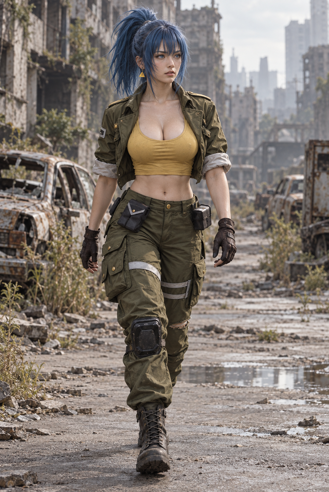
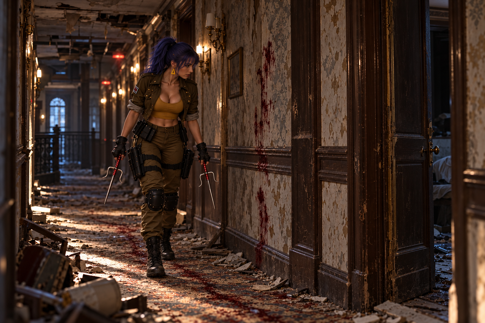
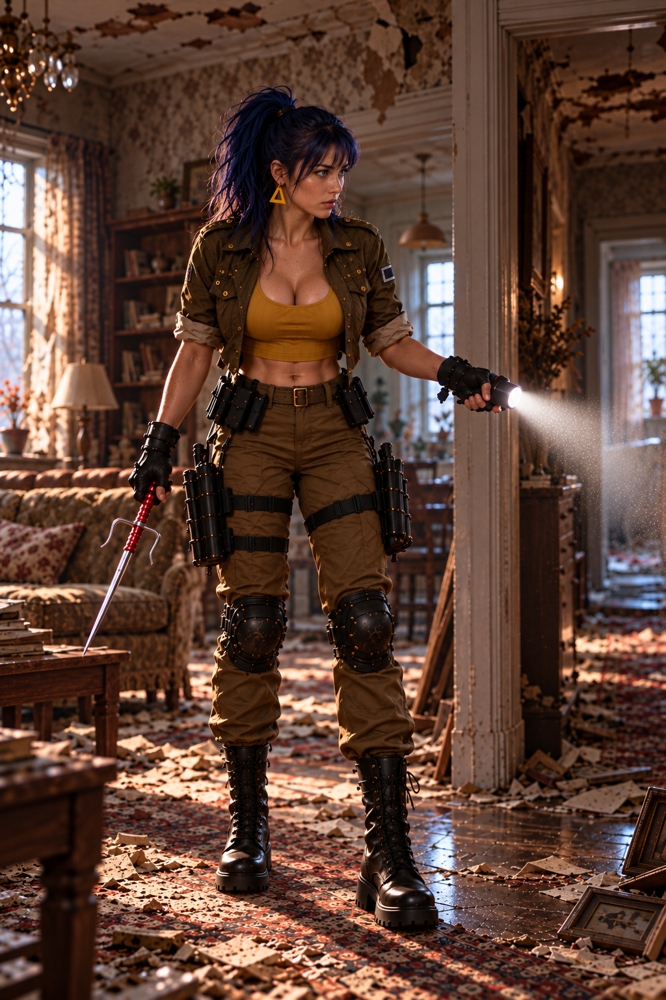
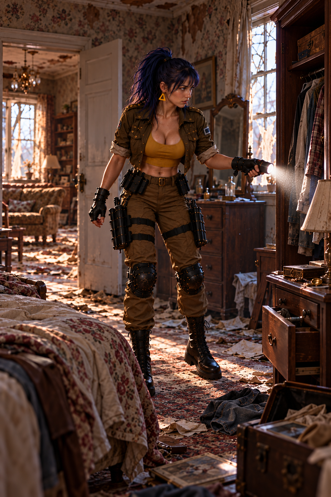
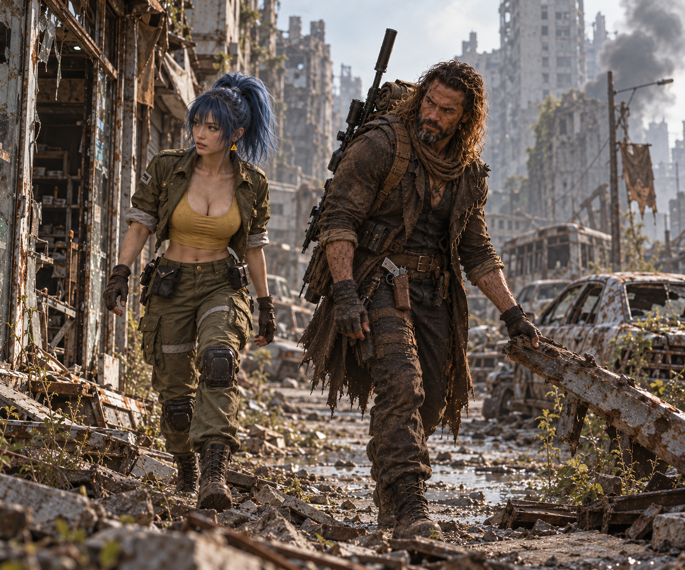
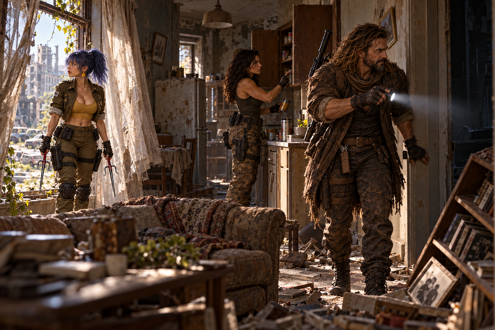
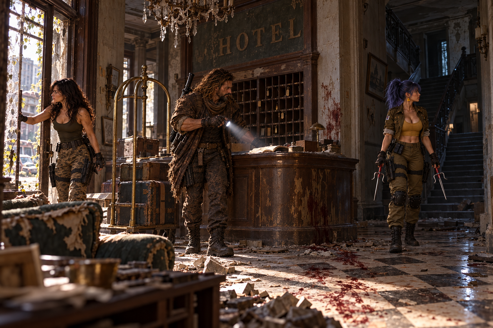

ÁLBUM 02 // 09 REGISTROS Presente 
01 // MEMÓRIA ARQUIVO 01 // SINAL INDIVIDUAL Leona no território devastado AMPLIAR ↗ 
02 // MEMÓRIA ARQUIVO 02 // RECONHECIMENTO O corredor antes da passagem AMPLIAR ↗ 
03 // MEMÓRIA ARQUIVO 03 // BUSCA EM INTERIORES Cada cômodo, uma nova leitura AMPLIAR ↗ 
04 // MEMÓRIA ARQUIVO 04 // PONTOS CEGOS Uma entrada nunca conta tudo AMPLIAR ↗ 
05 // MEMÓRIA ARQUIVO 05 // PAI E FILHA Joey e Leona em campo AMPLIAR ↗ 06 // MEMÓRIA ARQUIVO 06 // NÚCLEO FAMILIAR Os três seguem juntos AMPLIAR ↗ 07 // MEMÓRIA ARQUIVO 07 // TRAVESSIA Uma equipe antes de uma família AMPLIAR ↗ 
08 // MEMÓRIA ARQUIVO 08 // EXPLORAÇÃO EM EQUIPE Observar, marcar, avançar AMPLIAR ↗ 
09 // MEMÓRIA ARQUIVO 09 // HOTEL ABANDONADO Três leituras do mesmo perigo AMPLIAR ↗